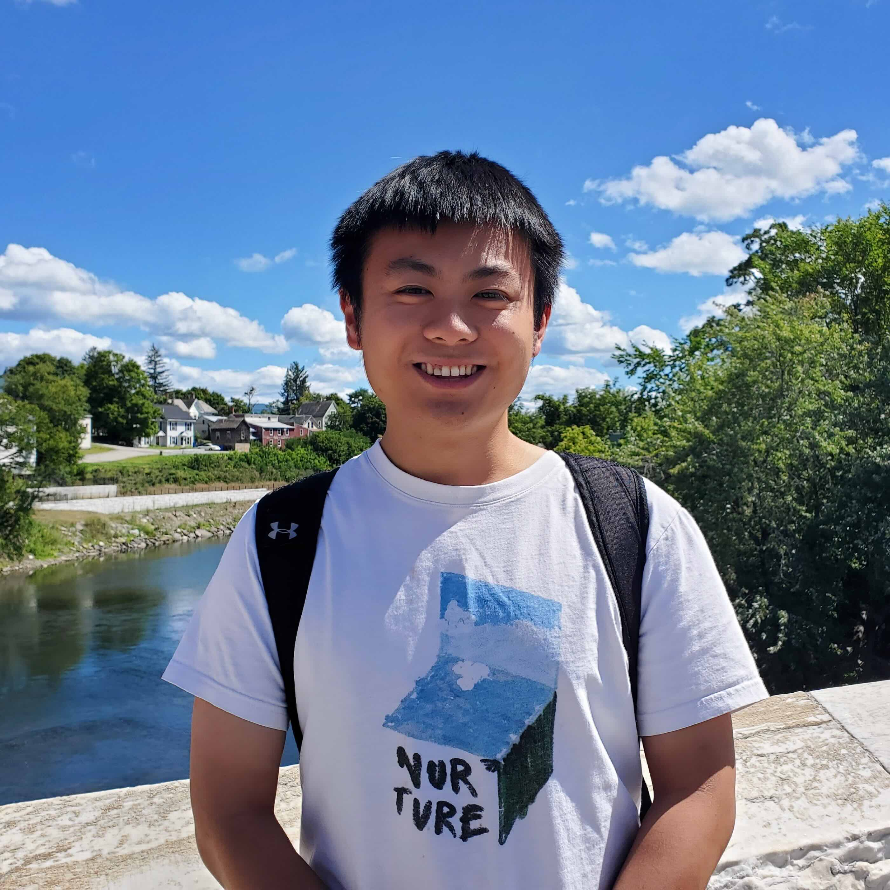

Yuxin (Kevin) Peng

Thank you for visiting my website! I am Kevin Peng, a computer science student at Grinnell College. I use he/him pronouns.
I am interested in the intersection of computer vision and robotics, and I am particularly passionate about building accurate and affordable 3D reconstruction tools.
Projects
Check out my projects page to see my work!